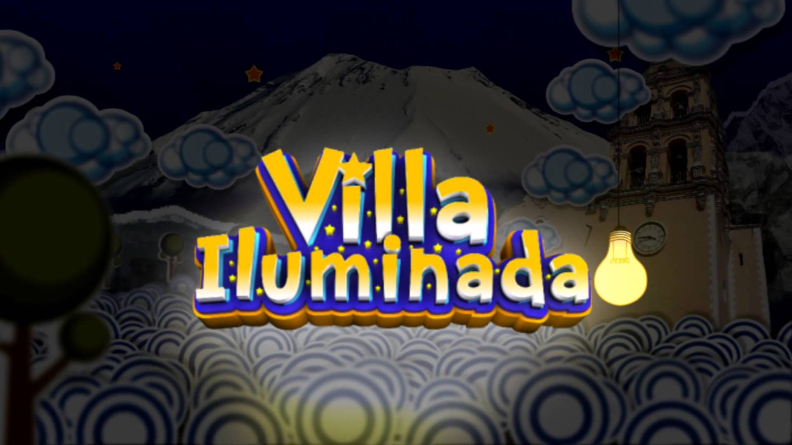

BIENVENIDO

Como parte de las actividades en esta época decembrina, se anunció en la ciudad de Puebla, Villa Iluminada 2014, una ruta que durante 43 días resaltará la belleza arquitectónica de la ciudad de Atlixco, embelleciéndola con luces coloridas de variantes tonos, formando un circuito de luz y color, con figuras y escenas alusivas a la navidad, las tradiciones y la identidad de la ciudad.
En esta ocasión, dentro de la Villa Iluminada se va a presentar la Feria de la Nochebuena del 28 de noviembre al 7 de diciembre y la Villa Infantil, un proyecto enfocado a los pequeños, a partir del día 12 de diciembre, ambos en el Recinto Ferial.
“Villa iluminada es una de las actividades que estamos hermanando con Puebla capital y otros municipios, para generar desarrollo turístico regional metropolitano”.
Es importante resaltar, que el Gobierno Municipal pondrá todos los apoyos a través de personal de turismo, policía de proximidad y agentes de vialidad a fin de garantizar la seguridad de las familias que visiten Villa Iluminada 2014.
